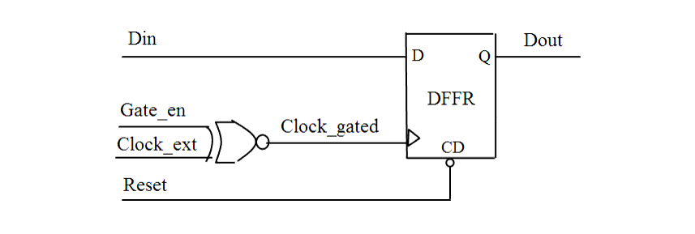

| Description | Gated clocks require extra attention during timing analysis and clock tree synthesis. If they are lost in the hierarchy and not grouped in a dedicated structure, they become difficult to identify. Use gated clocks carefully and only when needed. |
| Policy | DESIGN |
| Ruleset | CLOCKS |
| Language | VHDL/Verilog |
| Type | Hardware |
| Severity | Error |
This is an example of invalid Verilog code, followed by a circuit diagram that illustrates the problem:
module ntl_clk07_top (Clock_ext, Reset, Gate_en, Din,Dout); input Clock_ext, Reset, Gate_en, Din; output Dout; reg Dout; wire Clock_gated; assign Clock_gated = ~(Gate_en ^ Clock_ext); // NTL_CLK07 fires -- gated clock always @(posedge Clock_gated) begin if (!Reset) Dout <= 0; else Dout <= Din; end endmodule